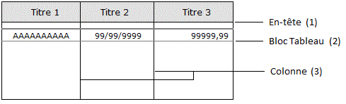

Re-dimensionner les éléments du tableau

Cliquez sur le trait concerné pour le sélectionner.
Déplacez la souris sur le trait jusqu'à ce que le curseur change de forme.
Déplacez le trait en maintenant le bouton gauche de la souris enfoncé.
Pour re-dimensionner un élément du tableau au clavier :
Cliquez sur le trait concerné pour le sélectionner.
Utilisez ensuite les touches fléchées pour agrandir ou diminuer l'élément.
Peuvent être modifiées :
La hauteur de l'en-tête (1).
La hauteur d'un bloc Tableau (2).
La taille d'un bloc étant toujours un multiple de la taille d'une ligne, le pas minimum de déplacement du trait est de 1 ligne (9 orteils en standard).
La largeur d'une colonne (3).
Changer la largeur d'une colonne du tableau
Rappelons tout d'abord (voir la rubrique Constituants d'un objet Tableau) que le découpage du tableau en colonnes décide de sa présentation. Contrairement à leurs homologues dans les tableaux des masques d'écran, les colonnes ne délimitent pas les objets qu'elles contiennent de manière figée : un objet peut en effet déborder d'une colonne, être à cheval sur deux colonnes ou s'étendre sur plusieurs colonnes. Ceci permet de faire figurer des blocs de contenus hétérogènes dans un même tableau (cas de nombreux états imprimés par l'ERP Divalto).
Le changement de la largeur d'une colonne est entièrement répercuté sur la largeur globale du tableau.
Il n'influe donc pas sur la largeur des autres colonnes. Un débordement de la clip grille est possible.
Xwin n'autorise pas de réduire la largeur d'une colonne en dessous d'un certain seuil, dépendant de la taille des objets lui appartenant.
La propriété des objets "Colonne" détermine la manière de considérer les objets lors d'un changement de taille d'une colonne.
Par exemple, un objet à cheval sur les colonnes C1,C2,... est déplacé lorsque la largeur de la colonne A est modifiée, sauf s'il appartient explicitement à la colonne C1.
Conseil : Afin d'éviter des effets indésirables lors des manipulations sur les colonnes du tableau, pensez à figer la colonne d'appartenance des objets qui ne sont pas clairement situés à l'intérieur d'une colonne précise (objets à cheval sur plusieurs colonnes) ou qui n'appartiennent pas réellement à la colonne où ils sont placés (tableau à blocs hétérogènes).
Ajouter, supprimer ou fusionner des colonnes
Cliquez droit dans le fond d'une colonne. Un menu contextuel est affiché, proposant les commandes suivantes :
Insérer une colonne avant / après.
L'insertion d'une colonne augmente la largeur globale du tableau et n'a pas de conséquence sur la largeur des autres colonnes. Un débordement de la clip grille est possible.
Supprimer la colonne.
La suppression d'une colonne diminue la largeur globale du tableau et n'a pas de conséquence sur la largeur des autres colonnes. Si un objet est entièrement inclus dans cette colonne et s'il n'est pas affecté manuellement à une autre colonne (voir la rubrique Constituants d'un objet Tableau), il est également supprimé. Attention, tous les blocs Tableau ne sont pas forcément visibles à l'écran.
Fusionner avec la colonne suivante.
Modifier les propriétés du tableau ou de ses colonnes
Pour modifier les propriétés de l'objet tableau, sélectionnez-le en cliquant sur une ligne du cadre du tableau puis allez dans la fenêtre des propriétés.
Pour modifier les propriétés d'une colonne, cliquez dans le fond de cette colonne (y compris dans l'en-tête) puis allez dans la fenêtre des propriétés.
Remarque : Il n'est pas possible de sélectionner plusieurs colonnes simultanément.
Sélectionner des objets dans un bloc contenant un tableau
Lorsque le bloc en cours d'édition contient un ou plusieurs tableaux, les sélections d'objets ont un comportement légèrement différent du comportement habituel :
Par Maj+Clic, il n'est pas possible de sélectionner simultanément un objet tableau et un autre objet quelconque.
Au lasso, on peut sélectionner tous les objets, sauf les objets Tableau.
Ctrl+A sélectionne tous les objets du bloc édité, à l'exception des objets situés dans les blocs Tableau et dans les en-têtes de tableau.
Copier / Couper / Coller d'un objet Tableau
Signalons les spécificités suivantes concernant les opérations de copier / couper / coller appliquées à un objet Tableau :
Au coller d'un objet tableau, la liste des blocs Tableau inclus dans ce tableau au moment du copier ou du couper est conservée, à la condition que ces blocs n'appartiennent plus à aucun tableau au moment du coller (rappelons qu'un bloc Tableau ne peut appartenir qu'à un seul tableau). Ainsi, un copier immédiatement suivi d'un coller ne conserve pas la liste des blocs Tableau alors qu'un couper immédiatement suivi d'un coller la conserve.
Attention : Au coller d'un objet tableau, les bornes d'impression de ses blocs Tableau ne sont pas recalculées en fonction de la nouvelle position du tableau dans le bloc ou des bornes d'impression du bloc lui-même. Les valeurs copiées dans le presse-papier sont purement et simplement conservées.
Autres fonctionnalités
Consultez la rubrique Arbre des tableaux d'un bloc pour insérer des blocs dans le tableau, en retirer, spécifier l'ordre d'affichage ou masquer des blocs Tableau, etc.